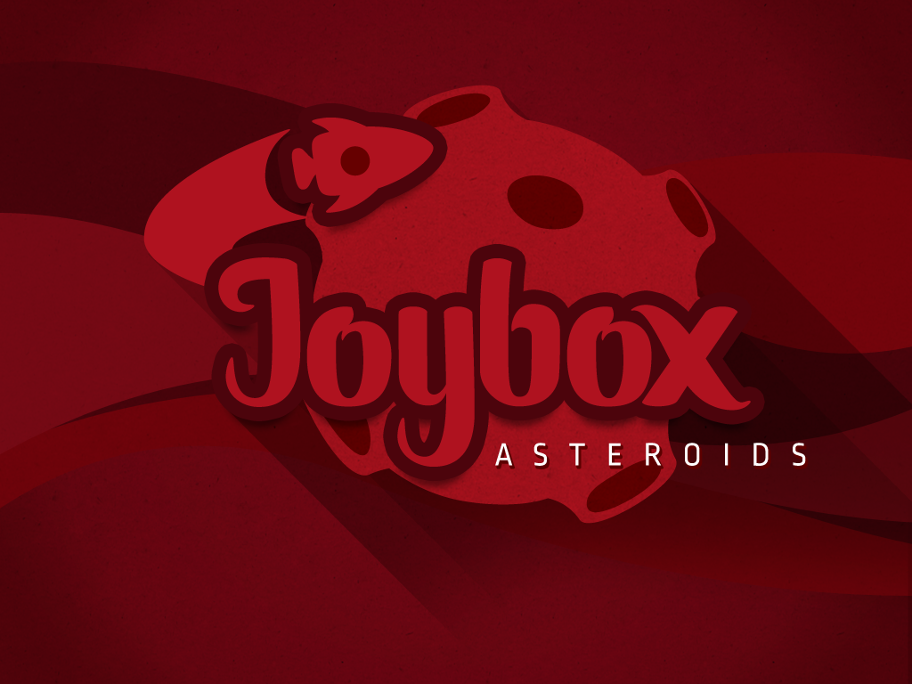
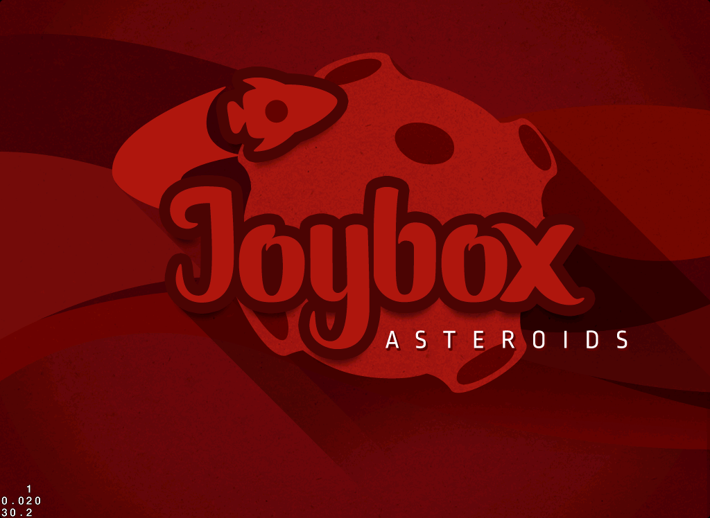

Arriving at the Game Architecture stage

In this path the game that we are going to create is a remake from a retro game from the year 1979: Asteroids! It will have some differences that you will notice along the way. But first lets get started creating a Joybox project, executing the following on your OSX terminal:
motion create --template=joybox-ios asteroids
The following will create a regular RubyMotion project, with some differences:
The director is already set up in the AppDelegate class.
Some assets are included in the resources folder, they are needed to present useful game statistics on the screen.
The next thing we need to do is download the required assets for this tutorial: Round 1 Assets, and place them on the resources folder.
Before we start with the game, we need to tell RubyMotion that the app will be for iPad only. That can be accomplished updating the RakeFile as follows:
# -*- coding: utf-8 -*-
$:.unshift("/Library/RubyMotion/lib")
require 'motion/project/template/ios'
require 'joybox'
Motion::Project::App.setup do |app|
app.name = 'Asteroids'
# Set the device family to iPad and the interface orientation to landscape left.
app.device_family = [:ipad]
app.interface_orientations = [:landscape_left]
# Also set the icon that will be used in iOS Home Screen.
app.icons = ['icon.png', 'icon@2x.png']
app.prerendered_icon = true
end
Menu
Well, we are now ready to begin with our main menu! For this we need to create a subclass of Layer, which is principally used to present objects on the screen and receive the user interaction. Lets create a folder named layers inside the app folder, then add a new file with the name menu_layer.rb and finally type the following inside it:
class MenuLayer < Joybox::Core::Layer
def on_enter
end
end
 For more information about the Layers, see: Layer documentation page.
For more information about the Layers, see: Layer documentation page.
In the previous code we are creating a subclass of Layer, named MenuLayer that will help us present two objects: The first will be the background of the menu and the other one will be the start button. Also you notice that there is a method named on_enter, this method is going to get called when the Layer is presented on the screen, which is useful to initialize all the instances needed at the beginning of the layers life cycle.
The following step will be place the menu's background image in the center of the layer. The way to do this is using a class named Sprite, the sprites are a regular two dimensional images that can be manipulated independently from others, let's create one adding the following code to the on_enter method:
def on_enter
background_sprite = Sprite.new file_name: 'sprites/menu/background.png',
position: Screen.center
self << background_sprite
end
For more information about the Sprites, see: Sprite documentation page.
With this we are creating an Sprite using the background.png image file and centering in the middle of the layer using the Screen class.
In order to render the Sprite on the screen its required to add it to the layer, this is done by using the method <<, which you can notice in the last line.
First Run
In order to show our Layer it required to be contained in a class called Scene, the Scenes represent stages of our game like the Levels or in this case Menus, for now you can think of them as little minigames.
For more information about the Scenes, see: Scene documentation page.
Now lets create another folder with the name scenes and inside it a file named menu_scene.rb, finally add the following code to create a subclass of Scene:
class MenuScene < Joybox::Core::Scene
def on_enter
end
end
The on_enter method works the same as with the layers, but in this case it will be called when the Scene is displayed. A perfect time to add our brand new MenuLayer to it:
def on_enter
menu_layer = MenuLayer.new
self << menu_layer
end
As you may notice, the scenes should contain layers and at the same time the layers should contain sprites.
Level Up!
This is the most standard architecture for the Game: Scenes << Layers << Sprites. On the other side that does not mean that you cannot adjust it to your game needs.
Finally we can tell the Director that we want it to present the MenuScene. The Director is the class that controls almost everything on the game, like: which scene should be presented or pause the game when a phone call enters.
For more information about the Director, see: Director documentation page.
If your open the app_delegate.rb file, you should see the following method:
def application(application, didFinishLaunchingWithOptions:launchOptions)
@director = Joybox::Configuration.setup do
director display_stats: true
end
@navigation_controller = UINavigationController.alloc.initWithRootViewController(@director)
@navigation_controller.navigationBarHidden = true
@window = UIWindow.alloc.initWithFrame(UIScreen.mainScreen.bounds)
@window.setRootViewController(@navigation_controller)
@window.makeKeyAndVisible
true
end
This is the required set up for our game and for the purpose of this tutorial we will not look deeply into, just add the following line into the bottom of the method:
...
# With the following we tell the director to present the MenuScene when the game starts.
@director << MenuScene.new
true
end
We are ready to run our game from the first time, which you can do running the following command on your OSX terminal:
rake
If everything succeeds you should see the following on your iOS Simulator:

Round 2
With this we conclude the first round of the easy level! In the next round we finish our game menu learning how to add multiple layers into an scene and buttons to our game!
You can download the source code of this round from: Easy Level - Round 1